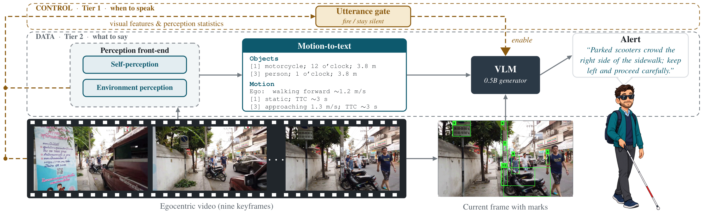

Architecture
A perception front-end turns egocentric video into short object and motion lines; the 0.5B generator writes the alert from the marked current frame and that text. Above them, an utterance gate watches visual features and perception statistics and decides when speaking is worth it.

Tier 1 fires or stays silent; Tier 2 composes the sentence. The generator sees nine keyframes of the last ~3 seconds, the marked current frame, and the serialized object and motion lines.
Showcase — model outputs
Showcase — supervision